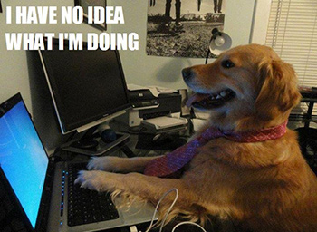

Opening your terminal for the first time
Today is a special day for me since it marks the start of my first blog and the end of Week 1 at Dev Bootcamp. I am pretty new to blogging so please forgive me if my blog drift to other topics and confuses you. I will try my best to keep it organize and interesting.
Here is a little bit about myself; my name is Brian Bier and I am currently attending Phase 0 at Dev Bootcamp. I have never thought of blogging because it is one of those things that people just need to enjoy doing. When a developer begins to blog it helps them solidify a concept while helping the readers like you understand it. Being that it’s only my first week at DBC we started to work on the not so scary Terminal and Git Version Control. I will explain more about what those two things mean soon but I will try to be detailed as possible.
The majority of people see the famous Terminal as a scary and difficult program to understand.(I will be using the word Terminal because I am a Mac user. If you are a windows user it is called powershell.) The Terminal is one of the most powerful tools in your computer that can execute tasks using simple commands. If you can start familiarizing yourself with terminal, will help you a whole lot.hey! It makes you look cool. Below is a great link for getting started with the command line.
What is Git? Git is a version control system that you download to your computer, which helps keep track of projects that you are working on. As a developer using Git will help you become more organize with your work. Git helps you save your work in specific moments in time, which are called commits, allowing you to solve errors faster. Git has its own commands that plays well with your terminal so you will have to learn a few of them but trust me you only end up using about 7 of the commands. Below is a link to learn git. Its important to know that Git saves everything to your local machine so if something happens to your computer you will lose everything. That is when github comes in to play.
Github is a free open source host where you can securely store and share projects with other people. Git and Github work together but They are not the same thing. Git keeps you organize in your computer and then you use Github to save it in the web for safe storage. Using Github is just essentially saying you store your work in the “cloud” where other can contribute or fork with ease. Yes! Other people can take your work or help you improve it. Github is Open Source so everything is out to the public, but don’t get discourage about Github, there are licenses that you can use so that you get credit for your work. I will post a link down below to help you understand open source and the use of different licenses. There are a plenty of open source host out there but Github is one of the most popular. As a new developer Github becomes your online resume so treat it well.
Made with ♥ Brian Bier